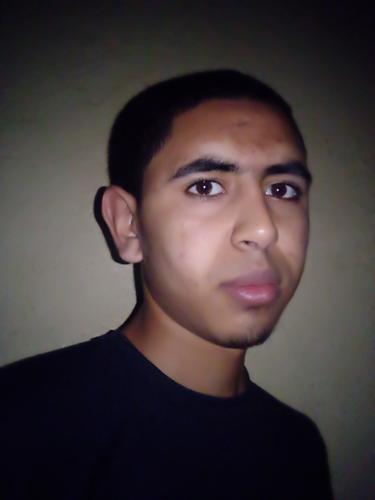

- Ayoub Elouaizi
- Tel: 0650380177
- Email: ayoubelouaizi@gmail.com
- Address: 80010, Agadir, founty
- Réseau social: Linkedin

Recherche de stage de fin d'études.
Formation
- Diplôme Universitaire de Technologie, Génie informatique, ECOLE SUPERIEURE DE TECHNOLOGIE D'AGADIR,
2021-2023
- Baccalauréat, Sciences Mathématiques A, Option Français, LYCÉE Aljoulane Biougra, 2021
Langues
- Arabe: langue maternelle
- Tamazirth: langue maternelle
- Anglais: niveau courant
- Français: niveau débutant
Expérience professionnelle
Activités professionnelles